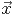

, the formal error on a function f(
, the formal error on a function f( ) is given by
) is given by
If  is a vector of independent experimentally measured quantities with associated random
measurement error δ, the formal error on a function f() is given by
|
| (1) |
Further, if f( ) is a functional, e.g. f(
) is a functional, e.g. f( ) = g(h(k(
) = g(h(k( ))), then the partial derivative of f is given
by the derivative chain rule:
))), then the partial derivative of f is given
by the derivative chain rule:
|
| (2) |
Therefore, for the computation of δf, one requires:
In the following sections, the implementation of an algorithm for automatic computation of partial derivatives and propagation of random errors in an arbitrary mathematical expression is described. The algorithm is implemented as a scripting language called fussy and can be used as an interpreter by the user. The syntax is similar to that of the C language making it easy to use in an interactive session or as a scripting environment. Each user defined variable in fussy is treated as an independent variable and expressions can be constructed using an arbitrary number of variables. It is error prone to express complicated expressions as single atomic statements and usually the final expression is built out of sub-expressions and temporary variables. For the purpose of random error propagation however, temporary variables are dependent on the independent variables (normal user defined variables) on the right hand side of an assignment operator. The algorithm described below does correct error propagation in the final expression composed of such temporary variables. A special language feature is used to distinguish between such temporary and normal variables as well as to associate measurement errors with numbers (see Appendix B.3).
Although it is possible to code Eq. 1 in other tools (Gillespie 1992; Harrison 1995; Bischof et al. 1997), it requires sophisticated programing and learning often arcane, new programing tools. This is usually time consuming and enough of a bother to discourage its use for the purpose of error propagation in every-day scientific use. The work of Stoutemyer (1977) using the REDUCE algebraic manipulation language (Hearn 1971, 1995) was one of the first which used automatic symbolic differentiation for error analysis in single atomic mathematical expressions. Harrison (1995) has used a similar approach and developed a tool for Mathematica3 . There are program development libraries (Barton & Nackman 1994; Griewank et al. 1996; Tsukanov & Hall 2003) for automatic differentiation which could be used for similar purpose. However they too suffer from the same problem of requiring more effort from the user than is possible in everyday work. Besides, most of these existing tools will be hard to use for multi-variate expressions and functionals. They are even harder (if not impossible) to use directly for complicated expressions expressed as a combination of sub-expressions. Apart from the difficulty of use, the two tools which do use automatic differentiation for error propagation require access and familiarity with other packages (the REDUCE package or the commercially sold package Mathematica).
The fussy interpreter is implemented internally as a virtual machine (VM) with a stack of its own. The derivative chain rule (Eq. 2) is implemented using a separate VM which has a separate stack per independent variable to hold the intermediate partial derivatives. At the terminal nodes of a parsing tree (e.g. the ’=’ operator) the values from these stacks are used to evaluate Eq. 1. A user program written in fussy is compiled into the VM instruction-set, referred to as the op-codes, to manipulate the VM stack (VMS), call built-in functions, perform basic mathematical operations or call user defined sub-program (functions or procedures). These op-codes are function calls which perform the operation they represent (mathematical operators, built-in function call or branching to a sub-program unit) as well as the steps required for automatic error propagation. Since user defined programs/expressions are translated into these op-codes, errors are correctly propagated in the mathematical expression in any arbitrary user program.
A simple C binding to the interpreter is also provided. The user program can be supplied to the interpreter via an in-memory string using the function calc(char⋆InString, edouble&ans,FILE⋆InStream,FILE⋆OutStream). The contents of the InString are parsed and converted to a VM instruction set. The result of the execution of this program is returned in ans. The last two arguments are not used in this case. Alternatively, if InString is set to NULL and the last two arguments set to valid file pointers, the interpreter will take the input from InFile and use OutFile as the output stream. A similar C++ interface of type calc(char ⋆InString,ostream &ResultStream,FILE ⋆InStream,FILE ⋆OutStream) writes the result of the program supplied in InString or via the file pointer InStream to the output stream ResultStream. OutStream in both interfaces is used as the output file for the error messages.
For a better understanding, in Section 2 I describe the algorithm for automatic random error propagation for the simpler case of a single variate expression. Section 3 describes the complete algorithm, along with the logic for the various operators in the form of pseudo code. The correctness of the algorithm is demonstrated in Section 4 using numerical examples. On the lines of proof of correctness of the algorithm, it is also argued that the algorithm is general and will work for any arbitrary expression. In Appendix A, a step-wise description of the algorithm for a general mathematical expression is given. Appendix B describes the syntax of the fussy language.